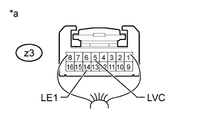
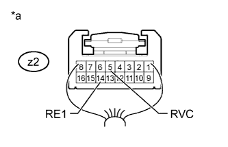

POWER MIRROR CONTROL SYSTEM > Power Mirrors do not Return to Memorized Position |
| 1.CHECK CAN COMMUNICATION SYSTEM |
Check if a CAN communication DTC is output (Click here).
| Result | Proceed to |
| DTC is not output | A |
| DTC is output | B |
|
| ||||
| A | |
| 2.CHECK POWER MIRROR CONTROL FUNCTION (ELECTRICAL REMOTE CONTROL MIRROR FUNCTION) |
Check the electrical remote control mirror function (Click here).
|
| ||||
| OK | |
| 3.CHECK SEAT MEMORY SWITCH FUNCTION (MIRROR MEMORY FUNCTION) |
Use the seat memory switch to record the mirror position (Click here).
Refer to the Data List for the mirror L and check that the memory operation is completed normally.
|
| ||||
| OK | |
| 4.CHECK SEAT MEMORY SWITCH FUNCTION (MIRROR RESTORING OPERATION) |
Check the mirror restoring operation (Click here).
| Result | Proceed to |
| Both mirrors do not operate normally | A |
| Either mirror does not operate normally | B |
|
| ||||
| A | ||
| ||
| 5.READ VALUE USING INTELLIGENT TESTER (MIRROR POSITION SENSOR) |
Using the intelligent tester, read the Data List (Click here).
| Tester Display | Measurement Item/Range | Normal Condition | Diagnostic Note |
| Mirror Vertical Sensor Vol | Vertical mirror position/MIN: 0, MAX: 4.98 V | Within range from 0 to 4.98 V | - |
| Mirror Horizontal Sensor Vol | Horizontal mirror position/MIN: 0, MAX: 4.98 V | Within range from 0 to 4.98 V | - |
| Result | Proceed to |
| Driver side mirror does not operate normally | A |
| Driver side mirror operates normally | B |
| Passenger side mirror does not operate normally | C |
| Passenger side mirror operates normally | D |
|
| ||||
|
| ||||
|
| ||||
| A | |
| 6.CHECK OUTER MIRROR CONTROL ECU ASSEMBLY LH |
|  |
Remove the outer mirror control ECU LH with its connectors still connected (Click here).
Measure the voltage according to the value(s) in the table below.
| Tester Connection | Condition | Specified Condition |
| z3-5 (LVC) - z3-14 (LE1) | Engine switch on (IG) | 4.7 to 5.3 V |
Measure the resistance according to the value(s) in the table below.
| Tester Connection | Condition | Specified Condition |
| z3-14 (LE1) - Body ground | Always | Below 1 Ω |
| *a | Component with harness connected (Outer Mirror Control ECU Assembly LH) |
|
| ||||
| OK | ||
| ||
| 7.CHECK OUTER MIRROR CONTROL ECU ASSEMBLY RH |
|  |
Remove the outer mirror control ECU RH with its connectors still connected (Click here).
Measure the voltage according to the value(s) in the table below.
| Tester Connection | Condition | Specified Condition |
| z2-5 (RVC) - z2-14 (RE1) | Engine switch on (IG) | 4.7 to 5.3 V |
Measure the resistance according to the value(s) in the table below.
| Tester Connection | Condition | Specified Condition |
| z2-14 (RE1) - Body ground | Always | Below 1 Ω |
| *a | Component with harness connected (Outer Mirror Control ECU Assembly RH) |
|
| ||||
| OK | ||
| ||